Créer le XLSX, ranger les images, renommer proprement.
01 · Vision
01. Le résultat visé
Je veux une machine simple : Codex prépare les contenus, n8n publie un post par jour, et LinkedIn reçoit seulement ce que j'ai validé.
Documentation utile
LinkedIn Posts API
Reference officielle pour publier via API.
02 · Préparation
02. Pourquoi je commence par le dossier local
Je lance Codex dans le bon dossier pour que tous les fichiers sortent au même endroit : XLSX, images, exports et futures corrections.
- 01
Ouvrir le dossier réseaux sociaux
- 02
Lancer le terminal au bon endroit
- 03
Garder les fichiers de séance ensemble
03 · Terminal
03. La commande de départ
Je donne à Codex la capacité d'agir dans le dossier. C'est pratique pour créer les fichiers, mais je garde le contrôle en vérifiant chaque sortie.
Prompt à copier
codex --dangerously-bypass-approvals-and-sandbox04 · Choix outil
04. Pourquoi Codex ici
Pour cette séance, j'utilise Codex parce que je veux générer des fichiers, créer des images, modifier un classeur et piloter n8n via MCP depuis un même environnement.
Se connecter à n8n et créer le workflow directement.
Relancer, compacter, corriger sans repartir de zéro.
05 · Attention
05. Le piège à éviter
Automatiser LinkedIn ne veut pas dire publier n'importe quoi plus vite. Je sépare la création du contenu, la validation humaine et la publication.
06 · Contexte
06. L'audit sert de carburant
Je repars de l'audit SEO/GEO pour comprendre le business, les offres, les douleurs et les angles. Les posts ne doivent pas parler de l'audit : ils doivent aider un restaurateur.
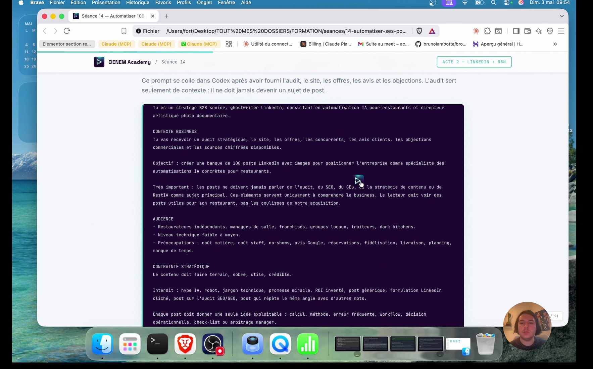
07 · Positionnement
07. Ce que le lecteur doit voir
Le lecteur doit sentir que je comprends son quotidien : réservations, no-shows, avis Google, marges, staff, menu, livraison, reporting.
- Une douleur concrète
- Une idée exploitable
- Une automatisation simple à imaginer
- Un bénéfice métier clair
08 · Anti-hype
08. Ce que je ne veux pas
Je ne veux pas de posts sur les robots, les prompts magiques ou la révolution IA. Je veux du terrain, du restaurant, des décisions opérationnelles.
Avant
L'IA va révolutionner votre restaurant.
Après
Un no-show coûte une table, du temps et parfois une soirée. Voilà comment automatiser le rappel sans harceler le client.
09 · Visibilité
09. La preuve LinkedIn + recherche
Je regarde comment un contenu LinkedIn peut ressortir dans les recherches. L'objectif n'est pas seulement d'avoir des likes, mais d'installer l'expertise dans plusieurs surfaces.
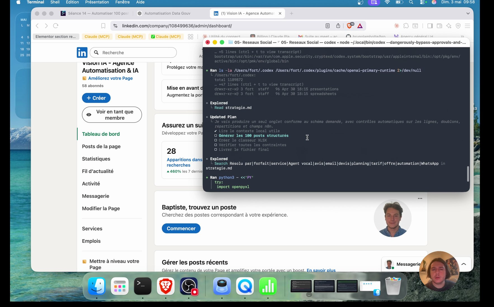
10 · Prompt à copier
10. Le prompt principal
Ce prompt sert à produire la banque complète de posts. Il impose le rôle, le contexte, les colonnes et les garde-fous.
Prompt à copier
Tu es un stratège B2B senior, ghostwriter LinkedIn, consultant en automatisation IA pour restaurants et directeur artistique photo documentaire.
CONTEXTE BUSINESS
Tu vas recevoir un audit SEO/GEO complet, le site, les offres, les concurrents, les avis clients, les objections commerciales et les sources chiffrées disponibles.
Objectif : créer une banque de 100 posts LinkedIn avec images pour positionner l'entreprise comme spécialiste des automatisations IA concrètes pour restaurants.
RÈGLE IMPORTANTE
Les posts ne doivent jamais parler de l'audit SEO/GEO, de la stratégie de contenu ou de RestIA comme sujet principal.
Ces éléments servent uniquement à comprendre le business.
Le lecteur doit lire des posts utiles pour son restaurant, pas les coulisses de notre acquisition.
AUDIENCE
- Restaurateurs indépendants, managers de salle, franchisés, groupes locaux, traiteurs, dark kitchens.
- Niveau technique faible à moyen.
- Préoccupations : coût matière, coût staff, no-shows, avis Google, réservations, fidélisation, livraison, planning, manque de temps.
CONTRAINTE STRATÉGIQUE
Le contenu doit faire terrain, sobre, utile, crédible.
Interdit : hype IA, robot, jargon technique, promesse miracle, ROI inventé, post générique, formulation LinkedIn cliché.
Chaque post doit donner une idée exploitable, un calcul, une méthode, une erreur fréquente, un workflow ou une décision opérationnelle.
CONTRAINTE DE VOLUME
- Génère exactement 100 posts.
- Chaque post doit avoir un titre, un texte LinkedIn, un CTA, des hashtags, un statut, un ordre de publication et une consigne image.
- Les 100 posts doivent être différents : pas de hook similaire, pas de même histoire, pas de CTA répété en boucle, pas de même visuel.
PILIERS À COUVRIR
1. Marges et coûts : food cost, temps manager, tâches répétitives, reporting.
2. Réservations et no-shows : confirmation, rappel, annulation, liste d'attente.
3. Avis et réputation : Google reviews, réponses, analyse des irritants, preuve sociale.
4. Fidélisation : clients dormants, offres personnalisées, anniversaires, segmentation.
5. Staff et planning : onboarding, documents internes, passation, recrutement.
6. Menu, livraison, catering : menu engineering, commandes en ligne, communication locale.
FORMAT DE SORTIE
Crée un fichier XLSX compatible avec une table n8n.
Colonnes attendues :
id, publish_order, status, scheduled_date, pillar, persona, pain, title, linkedin_text, cta, hashtags, proof_type, image_needed, image_prompt, image_file_name, image_alt, published_at, linkedin_post_id
RÈGLES D'ÉCRITURE
- Langue : français.
- Longueur linkedin_text : 900 à 1600 caractères.
- Premières lignes courtes et percutantes.
- Une seule idée forte par post.
- Chiffres : si estimation, écrire clairement "exemple simple" ou "scénario".
- CTA discret : audit, commentaire mot-clé, demande de schéma, diagnostic, exemple workflow.
- Hashtags : 2 à 4 maximum, spécifiques, pas de spam.
RÈGLES IMAGE
Chaque image_prompt doit produire une photo réaliste et minimaliste.
Style obligatoire : photographie documentaire, lumière naturelle, restaurant réel, détails opérationnels, pas de texte lisible, pas de logo, pas de visage reconnaissable au premier plan, pas de rendu 3D, pas de robot, pas de futurisme.
CONTRÔLE QUALITÉ AVANT DE LIVRER
Vérifie : 100 lignes, aucun titre dupliqué, une douleur restaurant précise par post, un bénéfice business par post, aucun chiffre inventé présenté comme fait général.
LIVRABLE
Crée le fichier XLSX dans le dossier de travail et indique son nom.11 · 100 posts
11. Le volume réel
Je demande 100 posts pour créer une réserve longue. Mais je garde en tête qu'un lot plus petit donne souvent plus de qualité.
| 20 à 30 posts | Très bon pour un premier test qualité. |
|---|---|
| 50 posts | Bon équilibre entre volume et contrôle. |
| 100 posts | Utile pour une banque longue, mais il faut relire et améliorer. |
| 200 posts | Possible, mais plus risqué en répétition et tokens. |
12 · Validation
12. Le contrôle qualité avant n8n
Je ne branche pas un tableur sale dans un workflow. Je vérifie d'abord les titres, les textes, les CTA, les images et les statuts.
- 01
Aucun titre dupliqué
- 02
Pas le même hook partout
- 03
CTA variés
- 04
Images cohérentes
- 05
Statut initial clair
13 · XLSX
13. Le classeur apparaît
Une fois le fichier généré, je l'ouvre. Je vérifie que les colonnes sont exploitables par n8n, pas seulement lisibles par un humain.
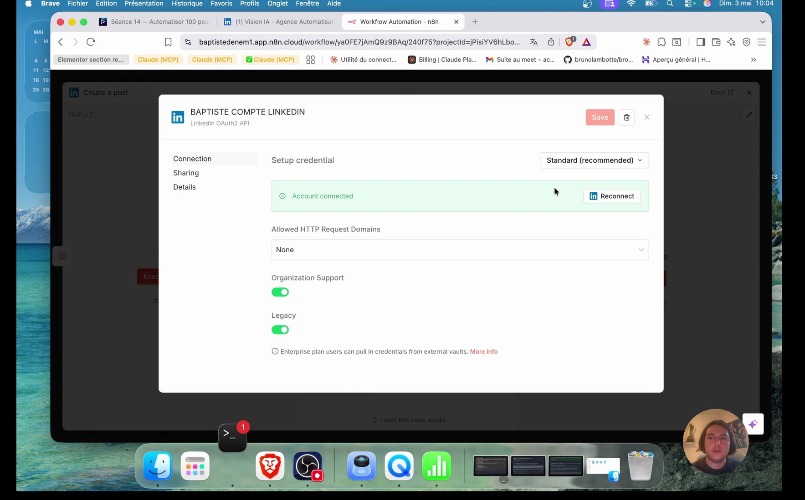
14 · Structure
14. Les colonnes importantes
Le tableur doit permettre trois choses : choisir la bonne ligne, publier le bon contenu, puis marquer la ligne comme traitée.
| id | Identifiant stable de la ligne. |
|---|---|
| status | draft, approved, published ou error. |
| scheduled_date | Date de publication prévue. |
| linkedin_text | Texte complet envoyé à LinkedIn. |
| image_file_name | Nom de l'image à convertir en binaire. |
| published_at | Trace anti-doublon après publication. |
15 · Anti-doublon
15. Le statut est le verrou
Le workflow ne doit pas republier une ligne. La ligne publiée doit être marquée terminée, puis le lendemain n8n prend la suivante.
Une exécution = une ligne = un post. Après publication, je verrouille la ligne.
16 · Relecture
16. Pourquoi je regarde le tableur
Je repère les formulations trop proches. Dans la séance, certaines structures se répètent : je préfère le voir maintenant que le publier pendant 100 jours.
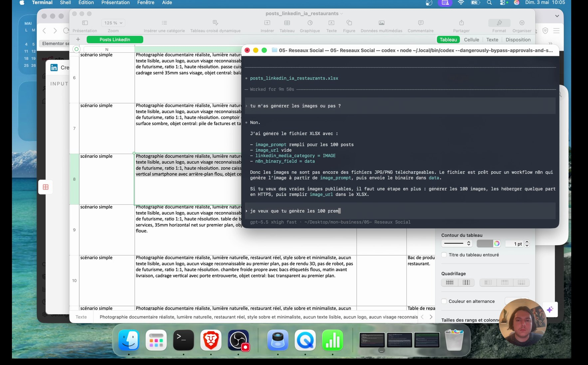
17 · Correction
17. Erreur fréquente : trop de mêmes structures
Quand Codex produit beaucoup, il peut répéter des débuts comme 'exemple simple' ou 'automatisation concrète'. Je corrige avant de continuer.
18 · Prompt à copier
18. Prompt d'amélioration
Je l'utilise quand les posts sont corrects mais trop mécaniques. Le but n'est pas de tout refaire, seulement de varier et humaniser.
Prompt à copier
Améliore les 4 premiers posts.
Objectif : les rendre plus naturels, moins répétitifs, moins "exemple simple" à chaque fois.
Garde la même intention business, mais varie les hooks, la structure et le CTA.
Ne change pas la logique du classeur.
Mets à jour le fichier XLSX.19 · Images
19. Les images : objectif et réalité
Je peux demander beaucoup d'images, mais c'est long. Pour avancer dans la séance, je limite le test aux premières images et je garde la logique.
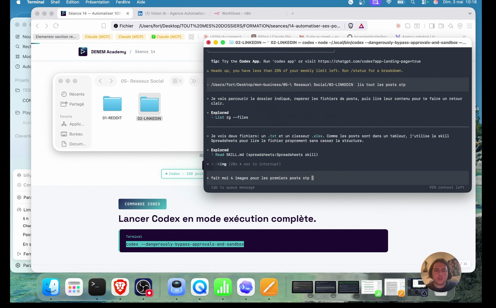
20 · Prompt à copier
20. Prompt petit lot d'images
Ce prompt permet de vérifier le mécanisme sans attendre 100 générations.
Prompt à copier
Reprends les 4 premiers posts du fichier.
Génère les 4 images associées.
Enregistre les images dans le dossier du projet avec des noms simples et réutilisables.
Ajoute ou mets à jour les colonnes image_file_name, image_needed et image_alt dans le classeur.
Vérifie rapidement les dimensions et la cohérence image/post.21 · Méthode
21. Pourquoi les lots petits gagnent
Plus le lot est petit, plus Codex garde de précision. Pour un client, je préfère livrer 30 posts très bons que 100 posts moyens.
Moins de répétitions.
Relire prend moins de temps.
On améliore une matrice avant de scaler.
22 · Fichiers
22. Nommer les images proprement
Chaque image doit avoir un nom exploitable par le workflow. Pas de nom flou, pas d'espace compliqué, pas de fichier perdu dans Téléchargements.
- 01
Nom court
- 02
Extension correcte
- 03
Lien avec l'id du post
- 04
Présence dans le dossier projet
23 · Contrôle
23. Terminal + tableur ensemble
Je garde le terminal visible pour voir ce que Codex fait et le tableur visible pour contrôler le résultat. C'est le meilleur duo pour ne pas perdre le fil.
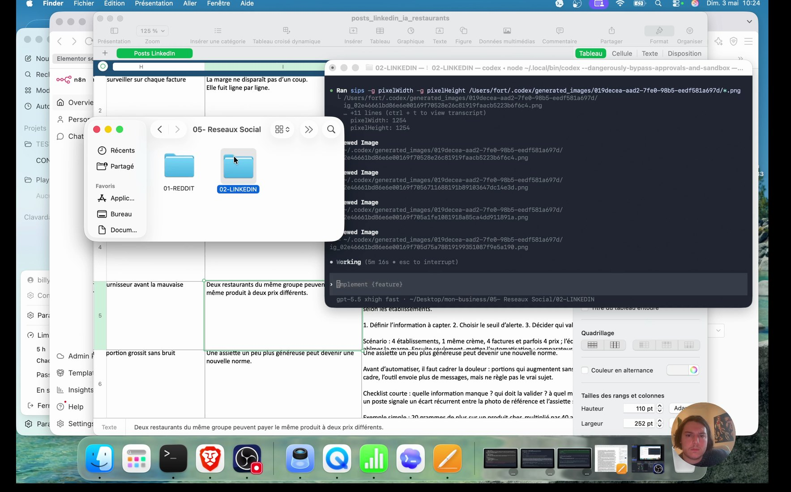
24 · Debug Codex
24. Quand Codex bloque
Si Codex semble figé, je ne panique pas. Je peux attendre, compacter ou relancer dans le même dossier avec une demande plus courte.
Symptôme
Il ne répond plus ou tourne trop longtemps.
Action
Compacter ou relancer Codex.
À garder
Le dossier, les fichiers et la demande précédente.
25 · Reprise
25. Relancer sans repartir de zéro
Je relance Codex dans le dossier de la séance, puis je lui demande de reprendre avec les fichiers déjà présents.
Reprends le travail dans ce dossier avec le fichier XLSX déjà généré. Vérifie les posts, les images présentes et continue uniquement ce qui manque.
Documentation utile
LinkedIn Marketing
Point d'entree de la documentation LinkedIn.
26 · Passage n8n
26. La base est prête
Quand le XLSX est propre et que les premières images existent, je peux passer à n8n. Je ne cherche pas encore à publier : je prépare le workflow.
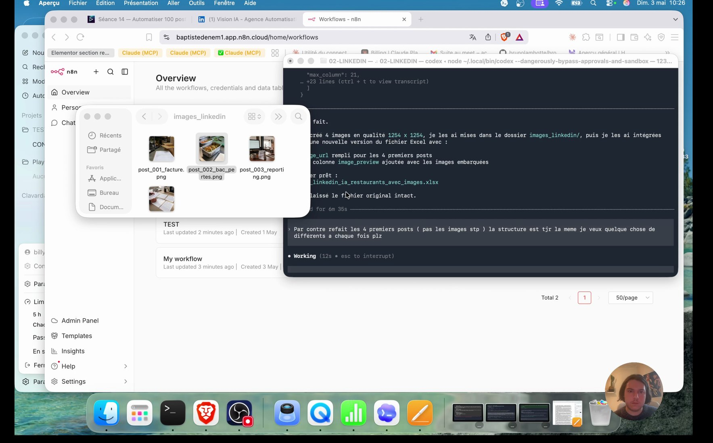
27 · Outil client
27. Pourquoi n8n dans cette séance
n8n reste très visuel et beaucoup de clients le connaissent ou le demandent. Même si un script Python peut aller plus vite, je dois savoir m'adapter à l'outil du client.
Le client voit le chemin du workflow.
Le node LinkedIn évite l'API HTTP au départ.
On peut corriger node par node.
28 · n8n
28. Créer le workflow
Je pars d'un workflow vide et je laisse Codex construire la base via MCP. Je garde ensuite la main pour tester et corriger.
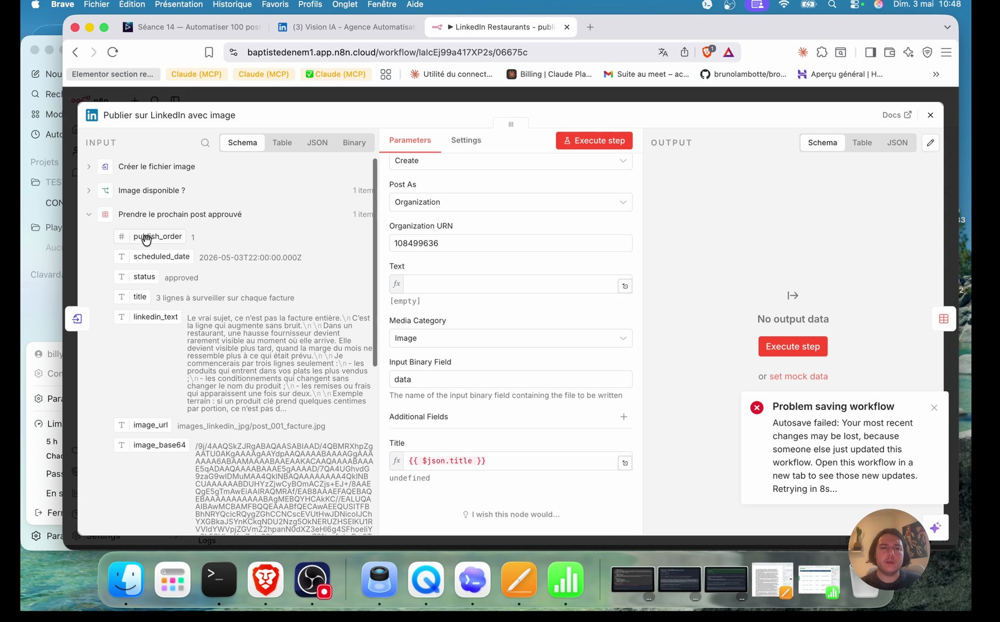
29 · LinkedIn
29. Le node LinkedIn natif
Je repère le node LinkedIn, puis je choisis Resource = Post et Operation = Create. C'est le chemin le plus simple pour la séance.
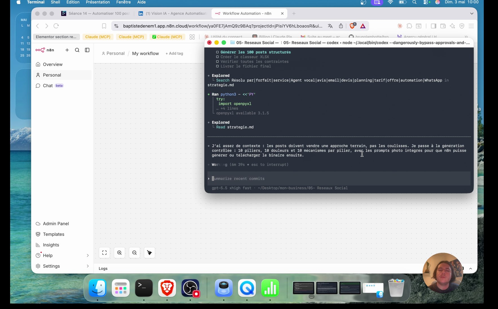
30 · Cible
30. Personne ou organisation
Person publie sur le profil personnel. Organization publie sur la page entreprise. Pour cette stratégie, je veux publier sur la page agence.
Avant
Post As = Person : utile pour tester le credential.
Après
Post As = Organization : utile pour publier sur la page entreprise.
31 · LinkedIn
31. Trouver l'Organization URN
L'URN est le numéro de l'organisation. Je récupère ce numéro depuis la page LinkedIn, puis je le mets dans n8n.
32 · Paramètres
32. Les champs du node
Le node doit recevoir le texte, la catégorie média et le champ binaire si une image est présente.
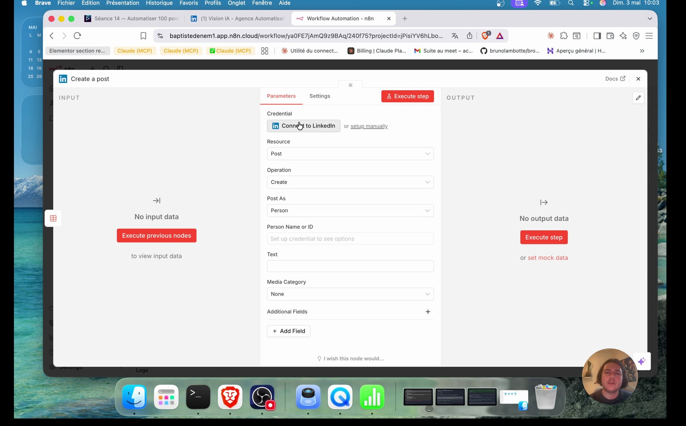
33 · LinkedIn
33. Configuration minimale
Je commence simple : credential connecté, post create, organization, texte dynamique. L'image arrive seulement après validation du texte.
| Credential | Compte LinkedIn connecté dans n8n Cloud. |
|---|---|
| Resource | Post. |
| Operation | Create. |
| Post As | Organization pour la page entreprise. |
| Text | Variable linkedin_text. |
| Media | None au test, Image ensuite. |
34 · Test simple
34. Pourquoi tester sans image
Le texte seul isole le problème. Si le texte passe, le credential et le node LinkedIn fonctionnent. Ensuite seulement je corrige l'image.
Je valide d'abord le chemin le plus simple. Puis j'ajoute la complexité.
35 · MCP
35. Connecter n8n à Codex
Je vais dans Settings, puis Instance-level MCP. Je choisis le workflow, je récupère l'URL et l'access token pour donner l'accès à Codex.
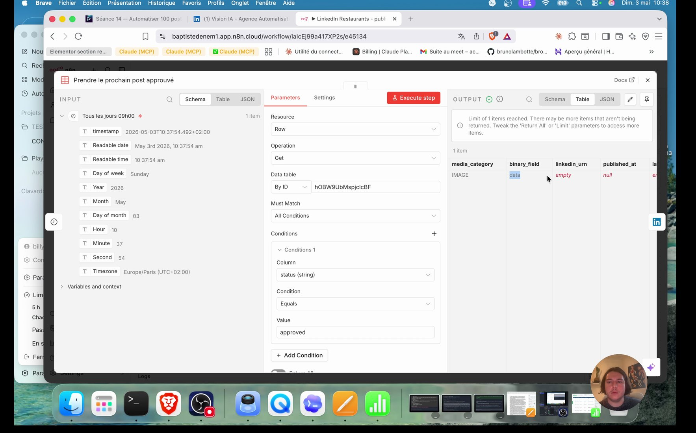
36 · Clés
36. Sécurité MCP
Je peux donner la clé à Codex pour construire le workflow, mais je la révoque après. Ce n'est pas une clé qu'on laisse traîner.
37 · Prompt à copier
37. Prompt connexion MCP
Je commence volontairement avec une demande courte. Codex comprend le contexte grâce au dossier et au MCP.
Prompt à copier
Maintenant, connecte-toi au MCP n8n.
Fais un nouveau workflow avec le tableur des posts et les photos associées s'il te plaît.38 · Prompt à copier
38. Prompt workflow complet
Quand je veux être plus précis, j'impose les règles du workflow : node natif, une ligne, anti-doublon, branche image et branche texte.
Prompt à copier
Travaille sur n8n via MCP.
Crée un workflow qui publie automatiquement mes posts LinkedIn depuis la base de posts.
Contraintes :
- Utilise le node LinkedIn natif de n8n, pas un HTTP API call.
- Publie sur mon organisation LinkedIn, pas sur mon profil personnel.
- Une exécution doit publier une seule ligne.
- Ne publie que les lignes non traitées.
- Après publication, marque la ligne comme publiée pour éviter les doublons.
- S'il y a une image, passe par la branche image.
- S'il n'y a pas d'image, passe par la branche texte seul.
- Prévois un test manuel node par node.
Je veux une logique simple, lisible et modifiable.39 · Architecture
39. La logique du workflow
n8n ne fait pas de magie ici. Il lit une base, choisit la première ligne non publiée, publie, puis marque la ligne.
TriggerData tableLigne non traitéeIF imageLinkedInMarquer publiée
40 · Clarté
40. Pas forcément d'IA dans le workflow
Une fois les contenus créés, le workflow peut rester logique. Il n'a pas besoin de régénérer du texte tous les jours.
IA pour produire la base.
n8n pour exécuter la publication.
Statut pour éviter le doublon.
41 · Base
41. Data table dans n8n
Codex comprend qu'il faut une table : elle stocke les 100 posts, les images et les statuts. Le workflow vient lire cette table.
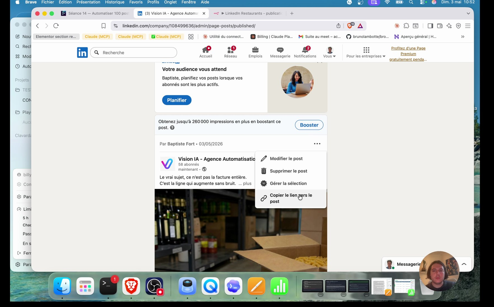
42 · Données
42. Ce que la table doit contenir
La table n8n remplace la lecture manuelle du fichier. Elle devient la base de publication.
| title | Pour retrouver le sujet. |
|---|---|
| linkedin_text | Texte publié. |
| image_file_name | Image à convertir. |
| status | Non publié, publié, erreur. |
| published_at | Date réelle de publication. |
43 · Planification
43. Le trigger quotidien
Je choisis une exécution quotidienne. Dans la séance, l'idée est claire : un post par jour, pas une boucle qui publie tout.
- 01
Intervalle : tous les jours
- 02
Heure : heure choisie pour la page
- 03
Timezone cohérente
- 04
Test manuel avant Publish
44 · Test node
44. La première exécution
Je clique sur le deuxième node pour voir la première ligne récupérée : titre, texte, image, data, statut.
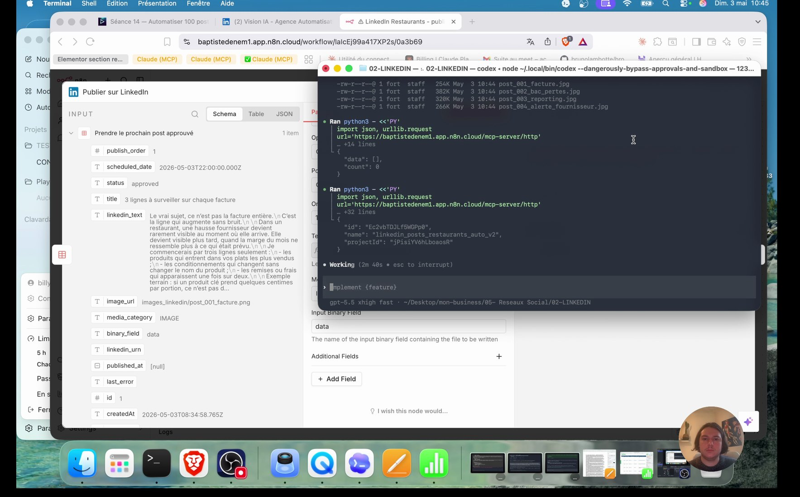
45 · Output
45. Lire la sortie avant de publier
La sortie du node me dit si n8n possède bien ce dont LinkedIn a besoin. Si la donnée n'est pas là, le post ne peut pas fonctionner.
Si linkedin_text est vide
Corrige la table ou la variable.
Si image_file_name manque
Passe en branche texte ou régénère le fichier.
Si data n'existe pas
Le binaire image n'est pas prêt.
46 · Expression
46. Mettre la variable de texte
Je récupère la variable `linkedin_text` et je la place dans le champ Text du node LinkedIn. Chaque jour, cette variable changera avec la ligne choisie.
={{ $json.linkedin_text }}47 · Publication
47. Tester le texte seul
Sans image, le post est publié. Ça prouve que LinkedIn, le credential et le champ Text fonctionnent.
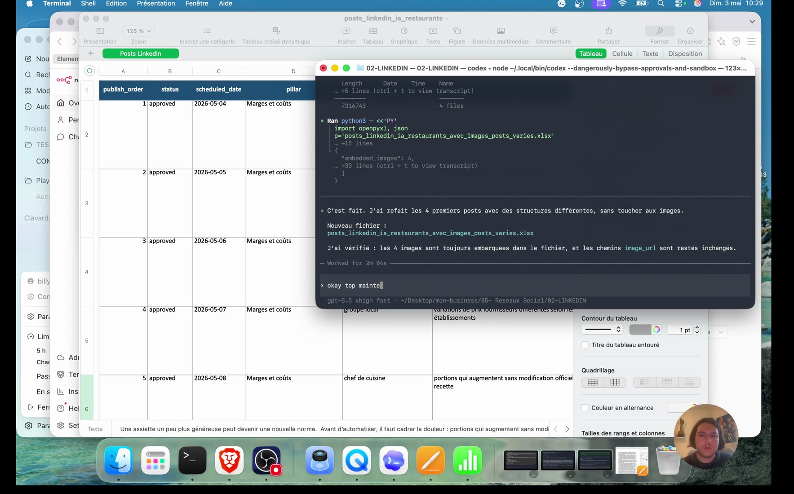
48 · Hygiène
48. Supprimer le post de test
Quand je publie pour tester, je supprime ensuite le post si ce n'est pas un vrai contenu. Le test sert à valider le tuyau, pas à laisser une trace inutile.
- 01
Publier une ligne de test
- 02
Vérifier sur LinkedIn
- 03
Supprimer le test si besoin
- 04
Revenir corriger n8n
49 · Erreur réelle
49. Le problème d'image locale
Le workflow ne peut pas publier une image si n8n ne peut pas y accéder. Une image locale sur mon Mac n'est pas automatiquement un binaire utilisable par n8n Cloud.
Documentation utile
n8n docs
Automatiser une sequence de publication.
50 · Prompt à copier
50. Prompt correction image
Je donne le problème exact à Codex. Plus le diagnostic est clair, plus la correction est rapide.
Prompt à copier
Le workflow publie bien le texte, mais l'image ne passe pas.
Le problème vient du fait que l'image est locale sur mon ordinateur.
n8n a besoin d'un binaire utilisable dans le workflow.
Corrige le workflow :
- transforme l'image locale en binaire exploitable ;
- garde le champ binaire dans data ;
- dans le node LinkedIn image, utilise Input Binary Field = data ;
- garde linkedin_text comme variable de texte ;
- refais un test avec la première ligne.51 · Workflow
51. Deux branches : true / false
Le workflow corrigé sépare la branche image et la branche sans image. C'est plus lisible qu'un node LinkedIn qui essaie de tout faire.
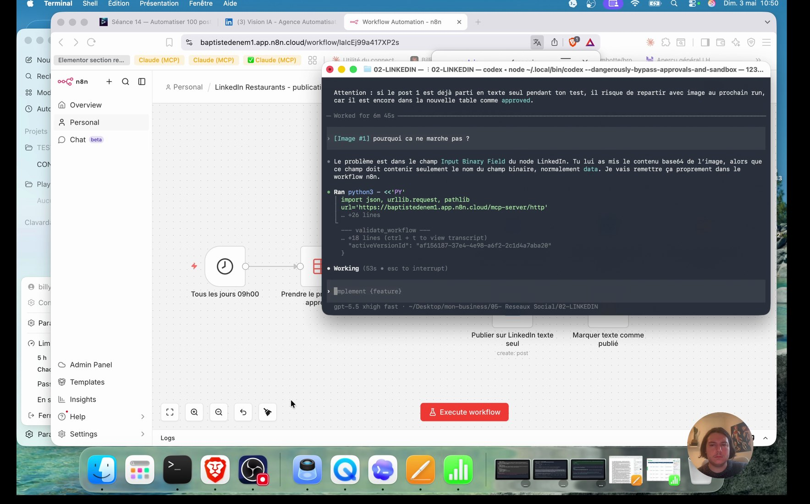
52 · True
52. Branche image
Si une image existe, n8n la convertit en binaire, vérifie le champ `data`, puis envoie le post LinkedIn avec Media = Image.
- 01
Condition image présente
- 02
Conversion en binaire
- 03
Binary field = data
- 04
LinkedIn Image
- 05
Update row
53 · False
53. Branche texte seul
Si l'image n'existe pas, le workflow publie seulement le texte. C'est indispensable pour ne pas bloquer toute la chaîne.
- 01
Condition image absente
- 02
LinkedIn sans média
- 03
Même variable de texte
- 04
Même marquage published
54 · Image
54. Le champ binaire data
Quand je fais View sur le binaire et que je vois l'image, n8n possède bien le fichier. À ce moment-là, le node LinkedIn doit pointer vers `data`.
Input Binary Field = data55 · Piège
55. Ne pas modifier en même temps que Codex
Quand Codex modifie le workflow pendant que je modifie aussi un node, je peux casser la configuration. Je laisse finir, je teste, puis je corrige.
56 · Vérification
56. Tester la branche image
Je relance la première ligne. Si l'image passe en branche true, se convertit, puis arrive dans LinkedIn, le flux image est bon.
57 · Anti-doublon
57. Marquer comme terminé
Après publication, le workflow coche ou met à jour la ligne. Le lendemain, il passe à la ligne suivante.
Le vrai signe que le workflow marche : la même ligne ne repasse pas deux fois.
58 · Test 2
58. Relancer pour vérifier le suivant
Je lance une nouvelle exécution. Si la deuxième ligne sort, l'anti-doublon fonctionne.
Résultat attendu
La première ligne est ignorée.
Si la même ligne revient
Le statut published_at n'est pas écrit.
Si rien ne revient
Le filtre est trop strict.
59 · Activation
59. Le bouton Publish
Le workflow ne tourne pas seul tant que je ne clique pas sur Publish. Avant ça, je teste manuellement.
60 · Réutilisation
60. Importer un JSON
Le workflow peut être exporté en JSON. Tu peux l'importer dans ton n8n, puis remplacer les credentials et les valeurs sensibles.
Prompt à copier
Pour réutiliser le workflow :
1. Télécharge le fichier JSON fourni dans le support.
2. Dans n8n, clique sur le menu du workflow.
3. Choisis Import from File.
4. Sélectionne le fichier .json.
5. Remplace mes credentials, mon Organization URN et tes chemins de fichiers.
6. Teste à vide avant de cliquer sur Publish.61 · Variables
61. Ce qu'il faut adapter
Un JSON importé n'est jamais totalement prêt. Il faut remplacer les credentials, l'URN, la table et les noms de colonnes.
| Credentials | Ton compte LinkedIn. |
|---|---|
| Organization URN | L'identifiant de ta page. |
| Data table | Ta base de posts. |
| Colonnes | Tes noms exacts. |
| Heure | Ton horaire de publication. |
62 · Récap
62. La méthode complète
Je repars de l'audit, je produis les posts, je transforme en base, je connecte n8n à Codex, je teste, je corrige, puis j'active.
AuditPostsImagesXLSXn8n MCPTestsPublish
63 · Système
63. Avant / après
Avant, il fallait ouvrir LinkedIn chaque jour. Après, je valide une base et le workflow s'occupe de la publication.
Avant
Je pense à publier, je copie un texte, je cherche une image, j'oublie parfois.
Après
Je valide des lignes, n8n publie une ligne par jour, puis marque la ligne terminée.
64 · Checklist élève
64. Ce que tu dois refaire
Tu peux refaire la séance en suivant cette checklist. Ne saute pas la validation du tableur.
- 01
Préparer le dossier
- 02
Lancer Codex
- 03
Coller le prompt 100 posts
- 04
Relire le XLSX
- 05
Générer un petit lot d'images
- 06
Connecter MCP n8n
- 07
Créer le workflow
- 08
Tester texte
- 09
Tester image
- 10
Publier seulement à la fin
65 · Diagnostic
65. Quand ça bloque
La plupart des blocages viennent de trois endroits : credential LinkedIn, variable mal mappée, image locale inaccessible.
| Erreur credential | Reconnecter LinkedIn dans n8n. |
|---|---|
| Texte vide | Vérifier la colonne linkedin_text. |
| Image absente | Vérifier image_file_name et binaire data. |
| Doublon | Vérifier l'update status/published_at. |
| Codex figé | Compacter ou relancer dans le même dossier. |
66 · Debug
66. Le bon réflexe avec les logs
Quand une erreur apparaît, je ne décris pas vaguement. Je copie les logs, le node concerné et le comportement attendu, puis je demande une correction ciblée.
Voici l'erreur du node [NOM_DU_NODE]. Le résultat attendu est [RÉSULTAT]. Corrige uniquement ce problème dans le workflow n8n.67 · Niveau
67. Pourquoi c'est une compétence expert IA
Je ne fais pas juste générer du contenu. Je construis une chaîne complète : stratégie, production, fichiers, workflow, test, correction, publication.
L'audit devient contenu utile.
Le tableur devient base de production.
n8n exécute sans improviser.
Je corrige avec des preuves.
68 · Qualité
68. La limite à garder en tête
L'automatisation ne remplace pas la stratégie. Je dois relire, améliorer et supprimer les posts faibles avant qu'ils partent.
Le workflow publie. C'est moi qui décide ce qui mérite d'être publié.
69 · Méthode
69. Mini fiche méthode
Pour refaire la séance dans un autre secteur, je garde le même squelette et je remplace seulement le contexte business.
| Restaurant | No-shows, avis, réservations, staff. |
|---|---|
| Agence | Leads, audits, relances, reporting. |
| E-commerce | Fiches produits, avis, paniers abandonnés. |
| Formation | Onboarding, exercices, relances apprenants. |
70 · Visuels
70. Les 30 captures utilisées
Toutes les images de ce support viennent de la vidéo de la séance. Elles servent à retrouver les écrans clés.
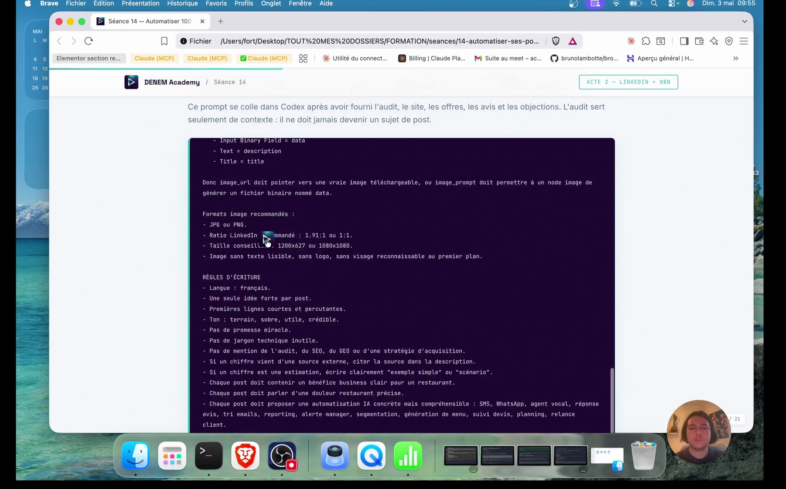
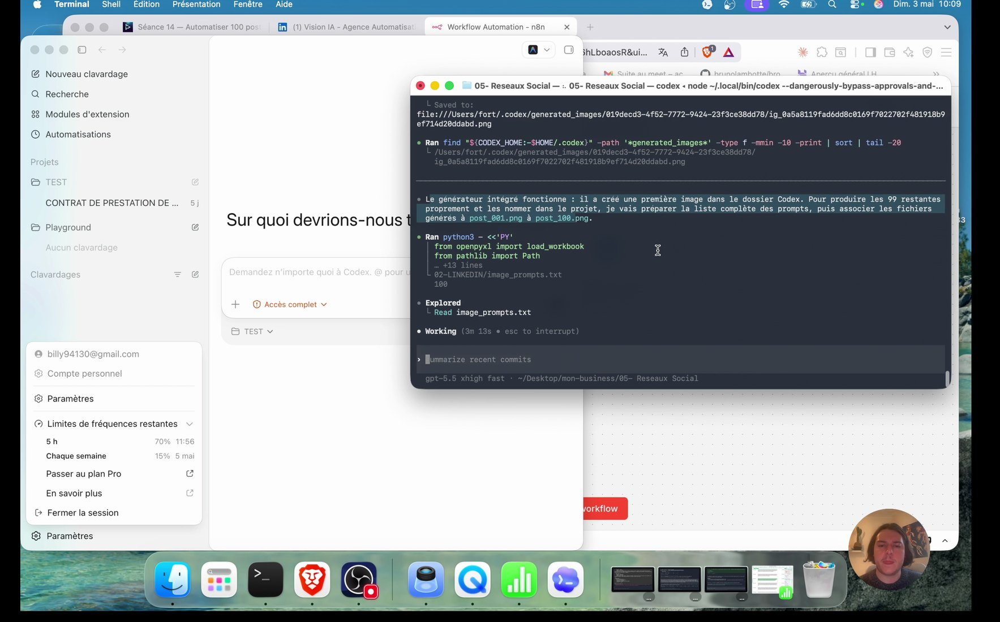
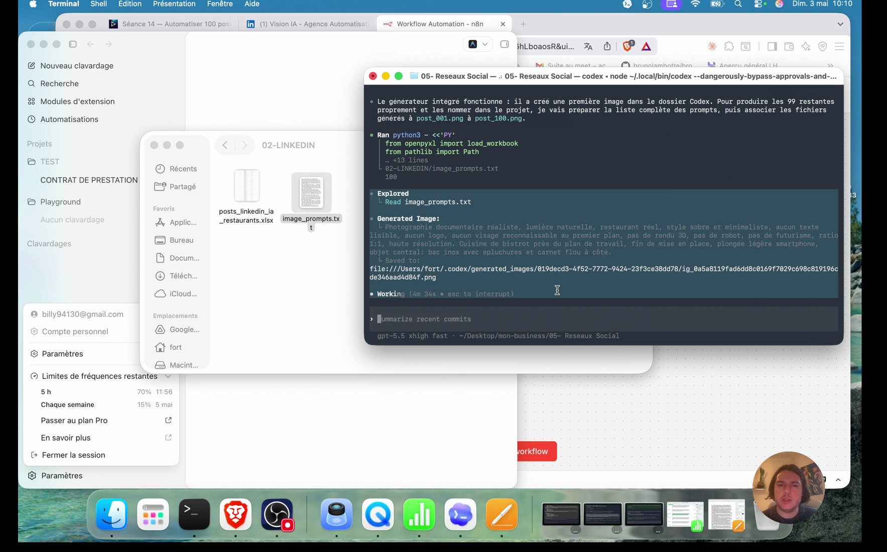
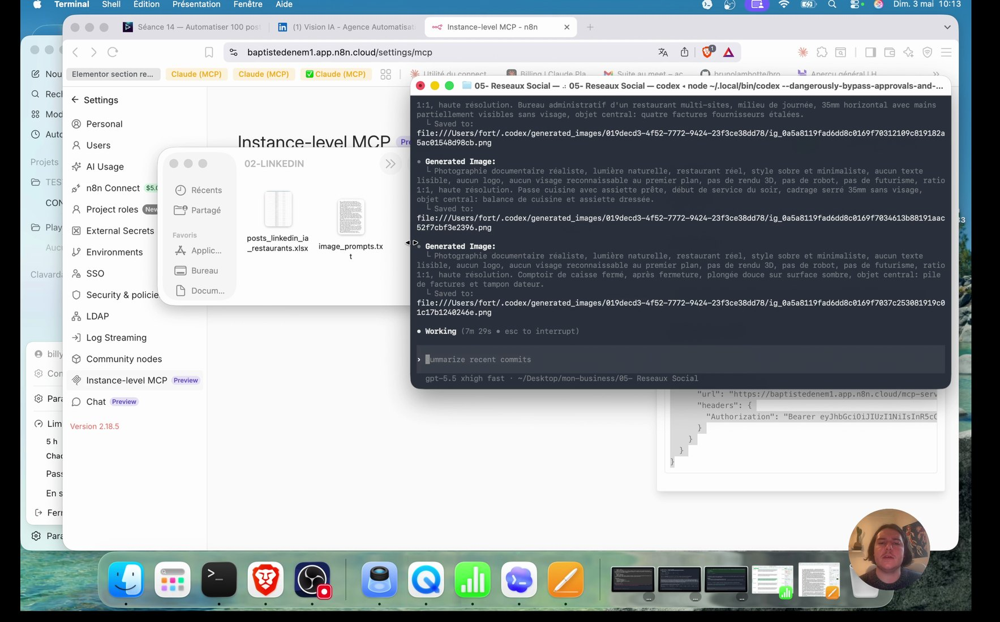
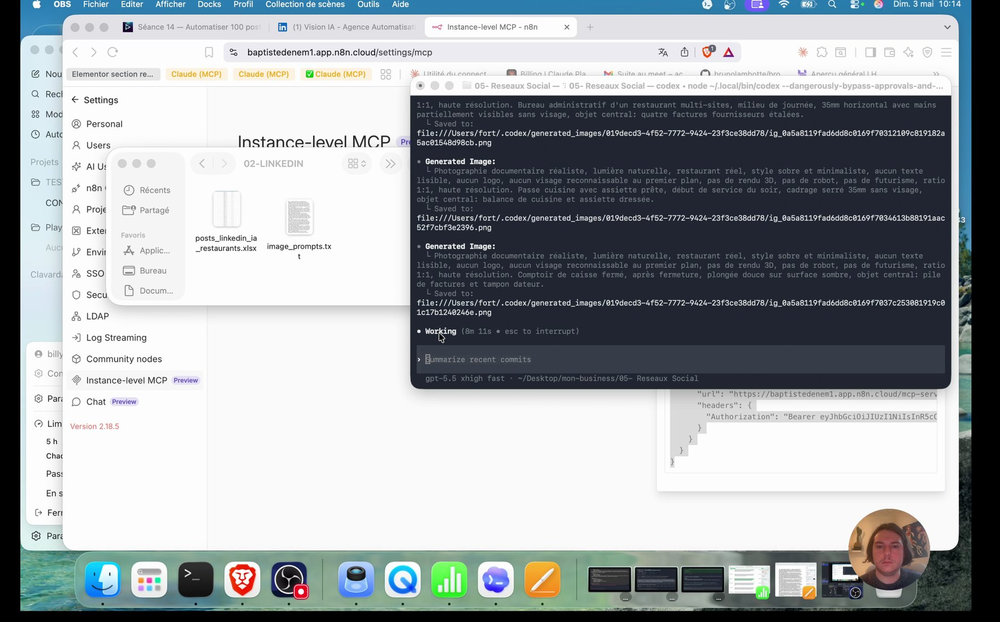
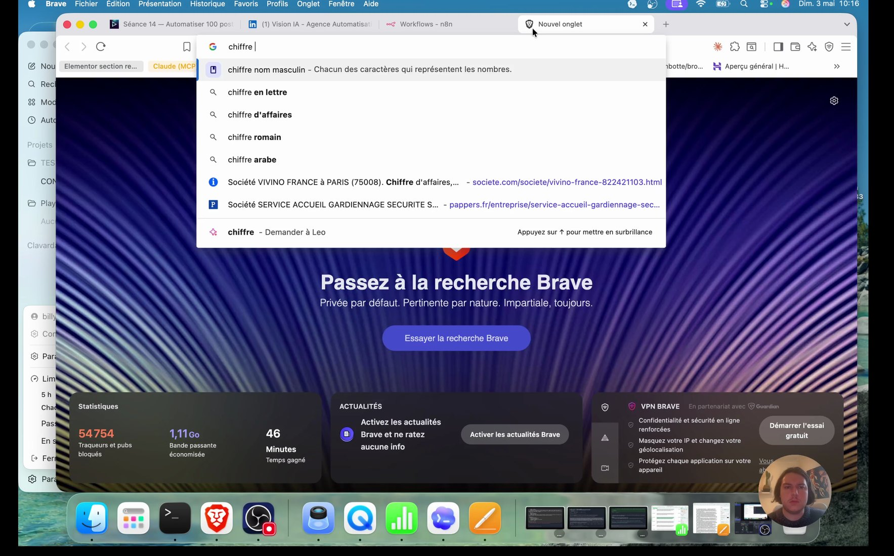
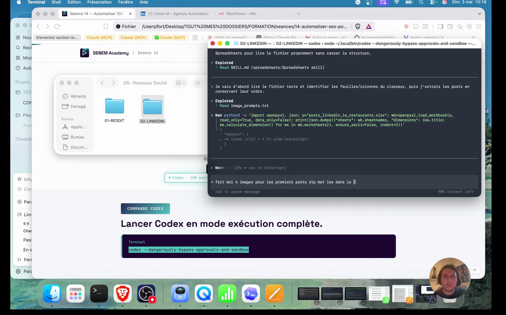
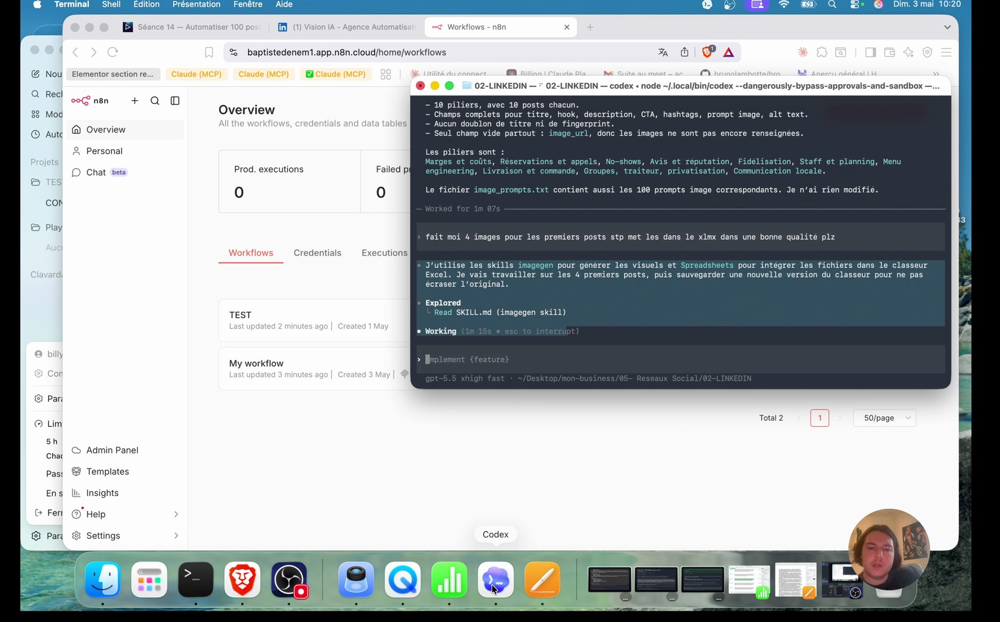
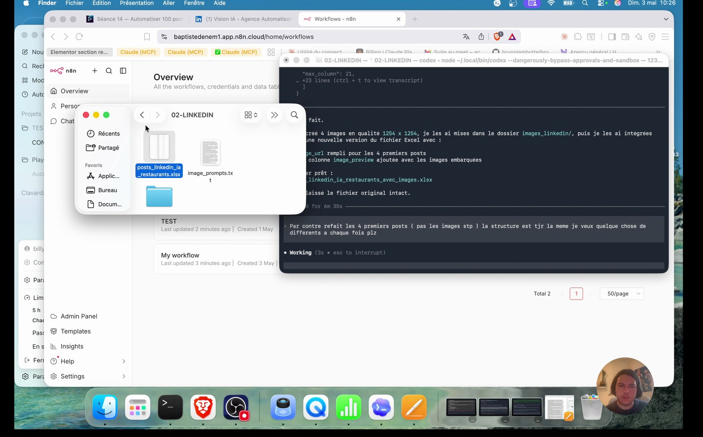
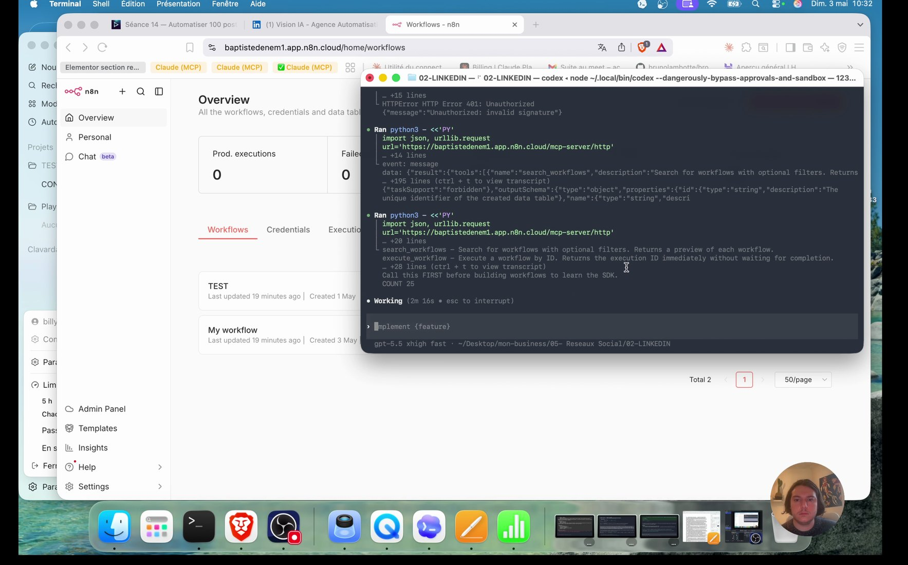
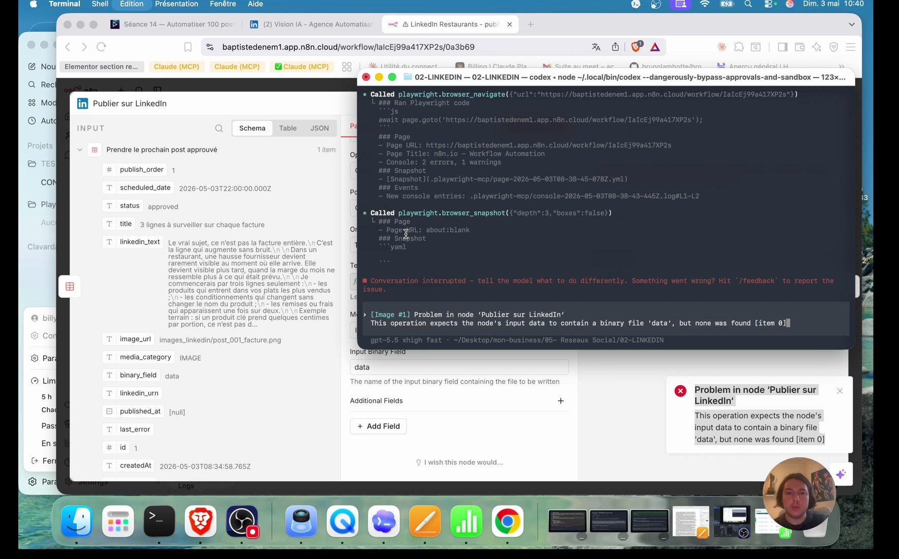
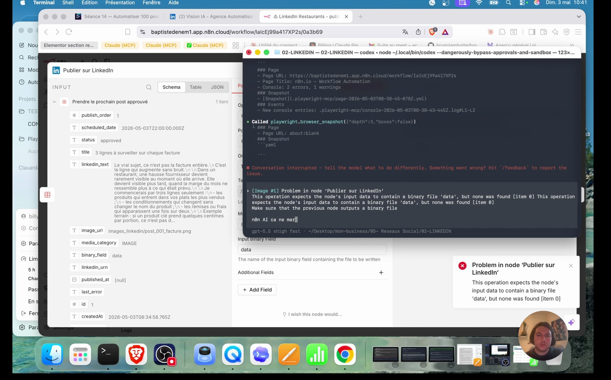
71 · Go live
71. Dernière vérification avant activation
Je vérifie le workflow une dernière fois avant d'appuyer sur Publish. Le workflow doit être prévisible.
- 01
Un seul item récupéré
- 02
Texte visible
- 03
Image visible si branche image
- 04
Post publié
- 05
Ligne marquée terminée
- 06
Clé MCP révoquée si inutile
72 · Récap final
72. Ce que tu dois retenir
Je crée une base de contenu avec Codex, je la transforme en base de publication, je demande à Codex de créer n8n via MCP, je teste texte puis image, et j'active seulement quand l'anti-doublon marche.
Tu peux refaire la séance avec un autre secteur en gardant la même colonne vertébrale : contexte, posts, table, n8n, test, correction, publication.